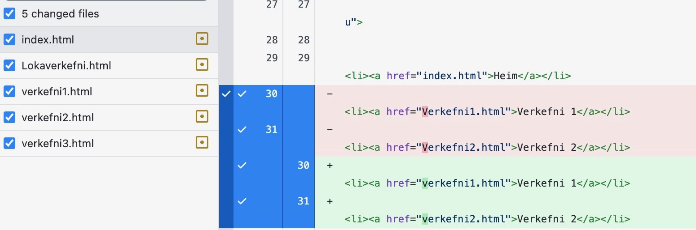
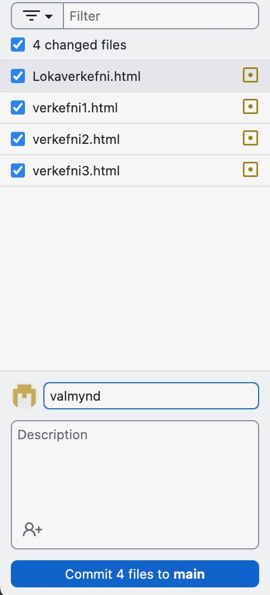
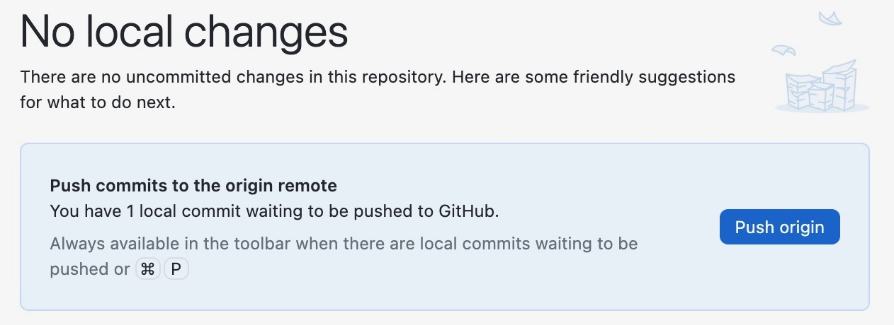
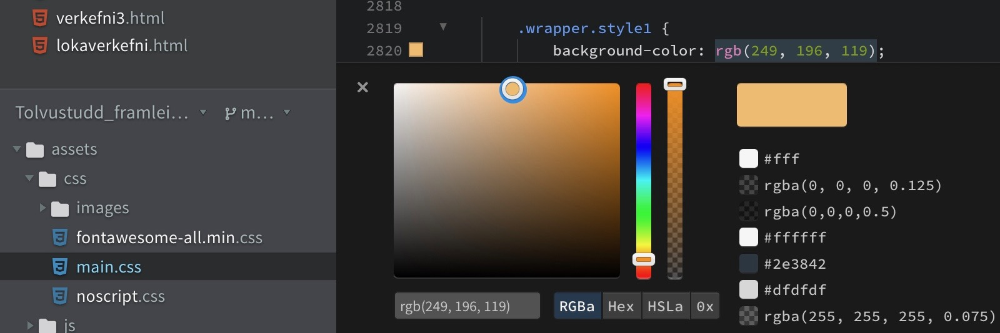

verkefni 2
Parametrísk hönnun og tölvustuddur skurður
Tölvustuddur skurður
Undirbúningur
Ég byrjaði á því að kynna mér verkefnalýsinguna og verkefnið með því að horfa á myndbönd frá kennara um verkefnalýsingu fyrir Verkefni 2 og horfði síðan á tvö myndbönd frá leiðbeinanada Jóni Þóri, Kassi og Parametrar. Ég horfði síðan á annað myndband frá Hobbyist Maker til þess að læra hvernig fingur tengingar virka. Ég ákvað síðan að byrja á því að klára að búa til límmiðann fyrst. Ég leitaði mér innblástrar á Pinterest og skoðaði heimasíður fyrrum nemenda. Þar næst hlóð ég niður inkscape og leitaði af myndum sem ég vildi hafa sem límmiða. Ég valdi síðan Palestínu þar sem ég er hálf palestínsk og væri til í að hafa rætur mínar sýnilegar á tölvunni minni.Inkscape
- Opnaði myndina mína frá Pinterest inn í Inkscape.
- Valdi view og síðan outline til þess að sjá útlínur.
- Valdi alla myndina mína, hægrismellti og valdi Trace Bitmap til þess að búa til útlínur sem skera átti eftir.
- dróg PNG myndina til hliðar og eyddi henni.
- Breytti síðan stroke og fill stillingunum, eftirfarandi:
- Fill: no paint
- Stroke paint: Flat color.
- Stroke style: width = 0.02 mm
Hér má sjá myndinni sem ég valdi af pinterest:





